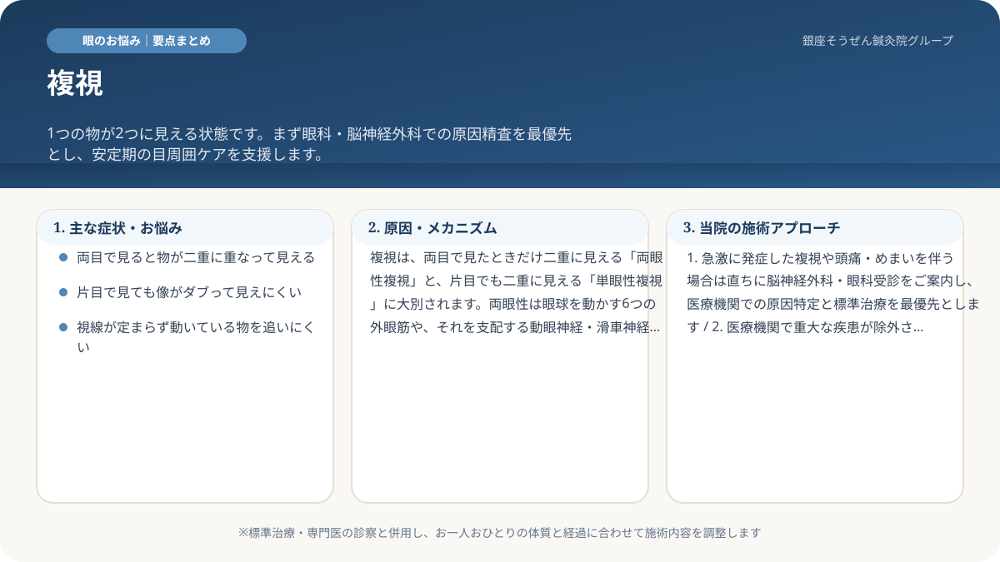

複視の鍼灸
1つの物が2つに見える状態です。まず眼科・脳神経外科での原因精査を最優先とし、安定期の目周囲ケアを支援します。
まず知っておきたい要点と改善の流れ

複視は、両目で見たときだけ二重に見える「両眼性複視」と、片目でも二重に見える「単眼性複視」に大別されます。両眼性は眼球を動かす6つの外眼筋や、それを支配する動眼神経・滑車神経・外転神経、脳幹の障害で生じ、急性の発症では脳卒中や脳動脈瘤、腫瘍などの重大な病気を除外する必要があります。単眼性は乱視や白内障などの屈折・水晶体異常が主因で、重度の眼精疲労が影響することもあります。
このようなお悩みはありませんか？
- ✓両目で見ると物が二重に重なって見える
- ✓片目で見ても像がダブって見えにくい
- ✓視線が定まらず動いている物を追いにくい
- ✓長時間のパソコン作業後に二重に見えやすい
当院の施術アプローチ・改善の流れ
なぜ鍼灸で改善へ向かうのか？（作用機序の図解）
複視に対する鍼灸は、後頸部〜眼周囲の微小循環と毛様体筋・自律神経調整機序を通じて、お体本来の回復力を引き出します。

眼球周囲の危険な深刺しを避け、風池・天柱・合谷・太衝など安全な経穴へ繊細に施術します。
PC・スマホ作業や緊張で固まった首深層筋と眼輪筋周囲の血流を促し、重だるさを軽減します。
交感神経優位による目の乾き・ピント調節疲労を鎮め、涙液分泌とリラックス反応を助けます。
眼科の点眼・定期検査を最優先としつつ、日々の眼精疲労や頭痛・肩こりの連鎖を整えます。
院長YouTube解説・関連動画
複視とは１つの物体を２つの像だと認識してしまうこと
複視は、１つの物体を2つの像であると認識してしまうことです。
複視には、大きく分けて２種類あります。１つは、両眼で見たときにだけ二重に見える両眼性複視で、もう１つは、左右どちらかの片方の目だけで見たとき二重に見える単眼性複視です。
人は正しくモノを見るために眼を動かします。この時、両眼は無意識で共同運動を行って左右の眼の像を１つに合わせます。複視は、この眼球運動に障害がある場合に起こることです。
眼球には6個の眼球を動かす眼筋という筋肉がついています。６個の眼球の筋肉は、動眼神経、滑車神経、外転神経という３つの脳神経によって動いています。
左右の眼球は、脳幹の神経細胞と神経路によって巧みに共同運動が行われています。そのために眼筋や脳神経、脳幹に障害が起こると複視が起きてしまうのです。
複視が起きるということは、眼球運動に障害があるということなのです。
複視の原因はたくさんある
複視の原因はたくさんあり、放っておいても自然に回復することもあります。しかし、大きな病気の初期症状として複視が現れることもあります。
単眼性複視は、眼の表面から網膜までの光の伝達が何かが原因で歪んだ時に起こります。モノが三重以上に見えることもあります。
いくつか見える像のうち、1つの像は明るさやコントラストなどの質が正常で、もう1つの像は質が正常ではありません。
よくある原因は、白内障や角膜の形の問題、矯正していない屈折異常などです。屈折異常があると、光線が網膜上に像を結ばなくなります。
その他にも、角膜の瘢痕や水晶体の位置のずれなどが原因として挙げられます。
両眼性複視がある場合は、両眼が同じ対象物に向いていない可能性があります。
正常な状態だと、それぞれの眼は対象の像を別々に受け取っています。それぞれの眼が別々に対象の像を受け取っていても単一の像しか見えません。
単一の像を見るためには、両眼が同時に同じ物に向くようにそろっていることが必要です。両眼がきちんとそろっていない場合、2つの像が見えます。このとき2つの像の質は同じです。
場合によっては、両眼を左右上下などのある特定の方向に大きく動かしたときにだけ両眼性複視が現れることがあります。両眼性複視の原因の多くは、外眼筋を支配する脳神経の病気です。
特定の筋肉だけが原因不明で麻痺することもあります。分かっている原因では、重症筋無力症やボツリヌス症、ギラン・バレー症候群などの神経による筋肉の制御を阻害する病気があります。
これらの病気は全身の筋肉を侵す病気のため、目を動かす筋肉も影響を受けるのです。
左右の目の焦点が合わない時に複視は起こります。複視の原因は目を動かすときにつかう筋肉の異常かその筋肉に指令を出す神経の異常です。複視の多くは、筋肉に指令を出す神経の異常が原因のことが多いです。
目の動きを司っている神経は3種類あります。動眼神経、滑車神経、外転神経です。それぞれの神経が動かす外眼筋は決まっています。
どの神経が障害を受けてしまったのかについて調べるときには、目の動きを見るとわかります。
内斜筋麻痺：内斜筋は眼球を内側に向ける筋肉であり、その麻痺によって目が外側にずれてしまい、複視が生じることがあります。
外斜筋麻痺：外斜筋は眼球を外側に向ける筋肉であり、その麻痺によって目が内側にずれてしまい、複視が生じることがあります。
上斜筋麻痺：上斜筋は眼球を上方に向ける筋肉であり、その麻痺によって目が下方にずれてしまい、複視が生じることがあります。
下斜筋麻痺：下斜筋は眼球を下方に向ける筋肉であり、その麻痺によって目が上方にずれてしまい、複視が生じることがあります。
2. 屈折異常
近視：近視は、光が網膜の前で焦点を結んでしまう状態であり、遠くの物体が二重に見えることがあります。
遠視：遠視は、光が網膜の後ろで焦点を結んでしまう状態であり、近くの物体が二重に見えることがあります。
斜位異常：斜位異常は、眼球が斜めに配置されてしまう状態であり、視線の調節がうまくいかないことによって複視が生じることがあります。
3. 筋肉の麻痺
Ⅲ脳神経麻痺：Ⅲ脳神経は眼の運動を制御する神経であり、その麻痺によって眼球の運動が制御できなくなり、複視が生じることがあります。
Ⅳ脳神経麻痺：Ⅳ脳神経は眼球を下方に向ける筋肉を制御する神経であり、その麻痺によって複視が生じることがあります。
Ⅵ脳神経麻痺：Ⅵ脳神経は眼球を外側に向ける筋肉を制御する神経であり、その麻痺によって複視が生じることがあります。
4. 脳神経の障害
脳幹の障害：脳幹は重要な神経の経路が通っている部分であり、ここに障害が生じると複視を含むさまざまな症状が現れることがあります。
視床の障害：視床は視覚情報の処理や統合を担当している部分であり、ここに障害が生じると複視が生じることがあります。
5. その他の原因
複視は上記のような眼球や神経の問題以外にも、さまざまな原因によって生じることがあります。
眼球の外傷：眼球に外傷が加わると、眼の筋肉が正しく動かなくなることがあり、複視が生じることがあります。
眼瞼の問題：眼瞼の問題によって目が正しく開けられないと、視野が制限されて複視が起きることがあります。
複視の症状は種類によって現れ方が異なる
単眼性複視の場合は、主に視力の衰えが関係しています。１つの老化現象として仕方ないというところもあるのです。
白内障が原因の場合には、すぐに改善をすることが必要ですが、視力の異常が原因の場合は眼鏡やコンタクトレンズで矯正することができます。
ただし、両眼性複視の場合は、脳の病気が関係していることもあります。そのため、十分に注意することが大事です。
単眼性複視には、片目で確認した時にモノが二重に見えるという症状があります。単眼性複視は、近視や遠視、乱視などの屈折異常がある場合や水晶体に異常がある場合に起こるものです。
両眼性複視は、片目で見たときには複視の症状はありません。複視が起きていない通常とおなじようにモノが見えるのです。
しかし、両目で見るときにモノが二重に見えるという症状があります。両眼性複視は、両目で見るときにのみモノが二重に見えるという症状があるのです。
1. 重影
複視の最も一般的な症状は、1つの物体が2つに見える重影です。この重影は、視野内に複数の像が重なって表示されるために生じます。一般的に、複視が生じると1つの物体が正確に重なって見えることはありません。物体が左右に分かれて見える場合や、上下に分かれて見える場合など、複数の重影が見られることもあります。これにより、視界が混乱し、物体の位置や距離を正確に判断することが困難になります。
2. 視界のずれ
複視の場合、視野内の対象物がずれた位置に見えることがあります。一方の眼で正確に見える対象がもう一方の眼でずれて見える場合や、眼の位置によって対象物の位置が変わる場合などがあります。この視界のずれにより、物体の位置を把握することが困難になり、身の回りの動作や活動が不安定になることがあります。
3. 視線の不安定性
複視の場合、視線が不安定になることがあります。眼球が正確に対象を捉えられず、揺れたり動いたりする状態が続くことがあります。この視線の不安定性によって、物体を長時間見続けることが難しくなり、視覚の疲れや不快感が生じることがあります。
4. 視力の低下
複視の症状が長期間続くと、両眼の協調がうまくいかないために視力が低下することがあります。視力の低下は、物体をはっきりと認識することや細かい文字を読むことに影響を及ぼすことがあります。
5. 目の疲れや痛み
複視が長時間続くと、眼球が過度に動かされたり、正確な焦点を結ぶために努力することによって目の疲れや痛みが生じることがあります。眼の疲れや痛みは、日常生活に不快感をもたらし、集中力や作業能力に影響を及ぼすことがあります。
6. 頭痛やめまい
複視によって眼球や視覚が不安定になるため、頭痛やめまいを感じることがあります。頭痛やめまいは、複視に関連した他の症状と組み合わさって生じることがあります。
7. 物体の重なり
複視の症状によって、視野内の物体が重なって見えることがあります。例えば、文字や図形などが重なって見えるために、正確な情報の把握や読み取りが困難になることがあります。
8. 視界の歪み
複視によって、視界が歪んで見えることがあります。まっすぐな直線が曲がって見えたり、対象物の形状が変わって見えることがあります。このような視界の歪みによって、日常生活において物体の位置や形状を正確に把握することが難しくなる場合があります。
9. 視線の偏位
複視の場合、片方の眼の視線がもう一方の眼よりも外側や内側に向いている場合があります。これにより、両眼の視線が一致せず、対象物が異なる位置に見えることがあります。視線の偏位によって、物体の位置や距離を正確に判断することが難しくなる場合があります。
10. 眼球の動作制限
複視の原因によっては、眼球の動作に制限が生じることがあります。眼球の特定の動きが制御できなくなることによって、視野内の対象物が見えにくくなる場合があります。例えば、眼球が上下に動かせない場合は、視野の上方や下方の対象物が見えにくくなることがあります。
11. 視線の動揺
複視の場合、眼球の運動に不調和が生じることがあり、視線の動揺や眼球の振動が見られることがあります。視線の動揺によって、視界が不安定になり、物体の追跡や注視が難しくなる場合があります。
複視が起こる原因は主に老化や糖尿病、甲状腺に関連した病気、脳に関連した病気などのことが多いです。
脳に関連する病気では、脳梗塞や脳腫瘍などの危険性もあります。二重に物が見えるようになった場合はすぐに医師に相談することが大切です。
複視は乱視とは違います。ただの眼の病気というだけではないのです。複視が起きる原因には病気が存在していることがあります。そのため、複視の症状がある場合は調べる必要があります。
複視を調べるには、目の位置と動きを調べます。肉眼ではわからない場合、赤ガラス試験という試験を行います。これは、片目の前に赤いガラスを置き、両方の目をペンライトで照らします。複視の症状があるときには必ず病院に行ってください。
複視があるときには、一時的でも、必ず医師に相談する必要があります。複視がある人は、たとえ複視が消えた場合にもできるだけ早く病院に行くことをお勧めします。
1. 視力の補正
複視が屈折異常によるものである場合、眼鏡やコンタクトレンズの使用によって視力を補正することで複視を改善することがあります。近視や遠視などの屈折異常によって生じる複視は、正しい眼鏡やコンタクトレンズを用いることで、視界が安定し重影が軽減される場合があります。
2. 筋肉の強化と調節
複視が筋肉の麻痺によるものである場合、眼の周りの筋肉の強化と調節を目指すリハビリテーションが行われることがあります。リハビリテーションは、視力の専門家である視能訓練士によって指導される場合が一般的です。リハビリテーションの目的は、弱った筋肉の強化やバランスを回復させることで、眼球の運動を正確に制御し、複視を改善することです。
3. 薬
特定の原因による複視の場合、症状を改善するための薬が行われることがあります。薬は、炎症や神経の過活動を抑制することによって複視の症状を軽減することを目指します。例えば、抗炎症薬、抗てんかん薬、ボツリヌス毒素注射などが複視の改善に用いられることがあります。
4. 手術
眼球運動障害や神経の障害による複視の場合、手術が必要となることがあります。手術は、眼の周りの筋肉や神経に対して行われることがあります。手術の目的は、筋肉のバランスを調整したり、神経の損傷を修復したりすることで、眼球の運動を正確に制御することを目指します。
5. プリズムの使用
特定の原因による複視の場合、プリズムと呼ばれる特殊な眼鏡レンズを使用することで複視の症状を軽減することがあります。プリズムは、視野にある複数の像を重ね合わせることで、重影を改善する効果があります。
6. 視力の補助具の使用
複視によって視力が低下している場合、拡大鏡やルーペ、アイパッチなどの補助具を使用することで、視力を補助し複視の影響を軽減することがあります。
7. 原因に対する改善方法
複視の改善には、原因を特定することが重要です。特定の原因による複視であれば、その原因に対する適切な改善が行われることが必要です。例えば、眼球の外傷や病気による複視の場合、その原因を改善することで複視の症状が改善することがあります。
複視のある人が眼科にいくと、通常の眼科での調べること以外に眼球運動について調べます。これは、どの方向の障害か調べるためです。
必要なときには、採血、内科や脳外科への紹介などを検討することもあります。眼球運動障害の原因を調べて、その原因に対した改善方法を行うのです。
複視が原因不明の場合や、原因に対して有効であると思われる改善方法を行っても複視がある場合は、手術やプリズム眼鏡などの方法で改善します。
手術は、外眼筋の位置を付け替えるもので、大人であれば日帰りできることが多いです。プリズム眼鏡は視線のずれを矯正するための眼鏡です。小角度のずれに有効なため使われています。
片目で見ても二重に見える単眼性複視の原因は、乱視や白内障などの病気です。どのような場合であったとしても、複視が出たときは早めに眼科に行く必要があります。
ツボの場所と押し方
睛明は目頭と鼻の付け根の間にあるツボです。
目が疲れたときに指の腹を当てて刺激をしましょう。親指と人差し指で、左右両方のツボを同時につまんでも良いです。
魚腰は眉毛の真ん中にあります。
押すときは上に向けて優しく押すのが効果的です。眉毛をほぐすようにマッサージをすることもお勧めです。
四白は、瞳から真下にあります。だいたい小鼻のまっすぐ横で指で押さえると浅く窪んだ場所です。
押すときは人差し指の腹を使って少し上に向かって押しましょう。優しく刺激してあげましょう。
ドライアイ・眼精疲労・まぶたのツボ図解
実際の施術ではお一人おひとりの体質・症状に合わせて選穴しますが、ドライアイ・眼精疲労・VDT症候群・眼瞼下垂/けいれんのケアの臨床でよく用いられる代表的なツボの目安です。

📌 代表的なツボの詳細一覧表を開く（6穴） ▼
| ツボ名 | 位置の目安 | 主な狙い | セルフケアの注意点 |
|---|---|---|---|
| 攅竹（さんちく） | 眉頭の内側のくぼみ | まぶたの重だるさ・涙液分泌の副交感神経サポート | 眼球を押さず眉骨の縁に向かって優しく押します。 |
| 魚腰（ぎょよう） | 眉毛のちょうど真ん中、黒目の真上 | 眼瞼下垂・眼瞼けいれん・まぶたの疲労緩和 | 目を閉じて軽く3秒ほど当てて離します。 |
| 絲竹空（しちくくう） | 眉尻の外側のくぼみ | 目の奥の痛み・側頭部の張り・かすみ目ケア | コンタクトレンズは外した状態でケアすると安全です。 |
| 太陽（たいよう） | こめかみのくぼみ | デスクワーク後の目の疲れ・こめかみ痛の緩和 | 蒸しタオルで目元を温めたあとに行うと効果的です。 |
| 四白（しはく） | 黒目の真下、頬骨の小さなくぼみ | 下まぶたのけいれん・眼窩下部の循環改善 | 皮膚を強くこすらず垂直に軽く触れます。 |
| 合谷（ごうこく） | 手の甲、親指と人差し指の間 | 頭顔面・目の緊張を和らげる全身調整穴 | 仕事中の合間にも手軽に押せるツボです。 |
国際査読論文の科学的エビデンス
国際的な医学データベース（PubMed・Cochrane等）で報告されているドライアイ・眼精疲労・VDT症候群・眼瞼下垂/けいれんのケア領域の代表的な査読済み鍼灸研究をまとめています（標準治療との併用や研究上の限界を含めて正確に掲載）。
📚 査読論文データ・PubMed出典リンクを開く（4件） ▼
| 年・研究デザイン | 対象・規模 | 主な結果 | 限界・出典 |
|---|---|---|---|
| 2024年 メタ解析 | ドライアイ 16試験（n=1,383：人工涙液併用） | BUT（SMD 1.25, P<0.0001）、シルマー試験（SMD 1.55, P<0.0001）、角膜染色・総有効率（OR 4.09）が有意改善。 | 自覚症状OSDIは有意差なし（P=0.15）。人工涙液との併用評価。 Medicine (PMID: 38181299) |
| 2019年 二重盲検RCT | ドライアイ 49名（米国・6か月追跡） | 実鍼群はOSDIスコアが1週〜6か月まで有意改善（6か月p<0.01）、乾燥感・充血も有意軽減。 | 小規模・客観的涙液指標（TBUT等）は有意差なし。 Clin Ophthalmol (PMID: 31114151) |
| 2020年 Cochraneレビュー | 緑内障・高眼圧症 3 RCTs（n=137） | 一時的な眼圧低下の報告はあるが8週時点で差消失、視力は有意差なし。 | 全試験が高バイアス・確実性非常に低。点眼治療の代替不可。 Cochrane (PMID: 32032457) |
| 2025年 メタ解析 | 変性眼疾患 21研究（緑内障・黄斑変性等） | 総有効率はOR 3.52（p<0.00001）だが、統合視力（p=0.50）・眼圧（p=0.11）に有意差なし。 | 非ランダム化研究含む。眼科標準管理下での補完研究段階。 Complement Ther Med (PMID: 40850524) |
参考文献・出典
- 2024年 メタ解析（ドライアイ 16試験（n=1,383：人工涙液併用））— Medicine (PMID: 38181299)
- 2019年 二重盲検RCT（ドライアイ 49名（米国・6か月追跡））— Clin Ophthalmol (PMID: 31114151)
- 2020年 Cochraneレビュー（緑内障・高眼圧症 3 RCTs（n=137））— Cochrane (PMID: 32032457)
- 2025年 メタ解析（変性眼疾患 21研究（緑内障・黄斑変性等））— Complement Ther Med (PMID: 40850524)
よくある質問（FAQ）
Q. 急に物が二重に見えるようになりましたが鍼灸を受けてよいですか？▼
Q. 眼科で異常なしと言われた疲労由来の複視も相談できますか？▼
あわせて読まれる関連疾患（眼のお悩み）
左右どちらかの視線が上下にずれる状態です。眼科治療を基本とし、頭の傾きに伴う首肩こりや眼精疲労を鍼灸でケアします。
片眼が対象を見る際に他眼が違う方向を向く状態です。眼科での眼鏡矯正や手術を最優先とし、安定期の眼精疲労や首肩の負担を支えます。
眼の奥の炎症で強い痛みや複視が生じる稀な疾患です。専門医での標準治療を最優先とし、安定期に主治医許可下で補完ケアを行います。
黄斑部に血漿成分が漏れ出し嚢胞状のむくみが生じる病気です。眼科での標準治療を最優先に、安定期の疲労・体調を支えます。
白目やまぶた裏の粘膜が炎症を起こす病気です。感染性は眼科受診を最優先に、アレルギー性の体質・免疫バランスを整えます。
片眼の外傷や手術後に健常眼にも自己免疫性炎症が生じる重篤疾患です。眼科治療最優先で安定期の補完ケアを支えます。
CLINICAL RECOVERY CASES
✨ 実際の臨床改善事例・回復経過を見る
銀座本院をはじめ各院での実際の改善事例を症状別に絞り込んでご確認いただけます。
おひとりで悩まず、まずはご相談ください
銀座本院・川口・大宮・横浜・博多・田無の各院でご予約を承っております。